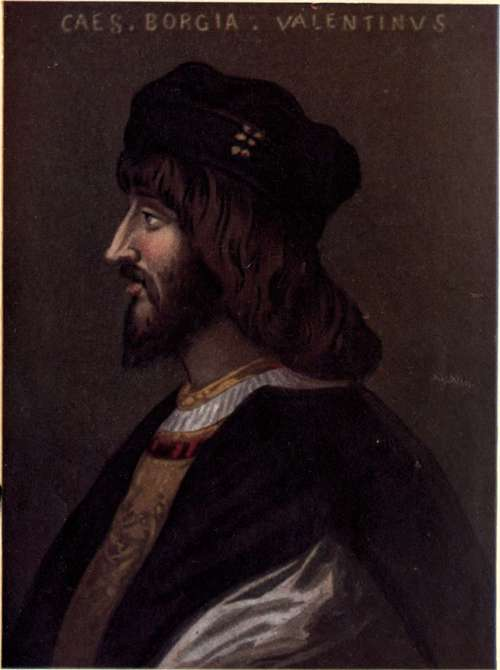

Preface
Description
This section is from the book "The Life Of Cesare Borgia", by Rafael Sabatini. Also available from Amazon: The Life of Cesare Borgia.
Preface
This is no Chronicle of Saints. Nor yet is it a History of Devils. It is a record of certain very human, strenuous men in a very human, strenuous age; a lustful, flamboyant age; an age red with blood and pale with passion at white heat; an age of steel and velvet, of vivid colour, dazzling light and impenetrable shadow ; an age of swift movement, pitiless violence and high endeavour, of sharp antitheses and amazing contrasts.
To judge it from the standpoint of this calm, deliberate, and correct century as we conceive our own to be is for sedate middle age to judge from its own standpoint the reckless, hot, passionate, lustful humours of youth, of youth that errs grievously and achieves greatly.
So to judge that epoch collectively is manifestly wrong, a hopeless procedure if it be our aim to understand it and to be in sympathy with it, as it becomes broad minded age to be tolerantly in sympathy with the youth whose follies it perceives. Life is an ephemeral business, and we waste too much of it in judging where it would beseem us better to accept, that we ourselves may come to be accepted by such future ages as may pursue the study of us.
But if it be wrong to judge a past epoch collectively by the standards of our own time, how much more is it not wrong to single out individuals for judgement by those same standards, after detaching them for the purpose from the environment in which they had their being ? How false must be the conception of them thus obtained ! We view the individuals so selected through a microscope of modern focus. They appear monstrous and abnormal, and we straightway assume them to be monsters and abnormalities, never considering that the fault is in the adjustment of the instrument through which we inspect them, and that until that is corrected others of that same past age, if similarly viewed, must appear similarly distorted.
Hence it follows that some study of an age must ever prelude and accompany the study of its individuals, if comprehension is to wait upon our labours. To proceed otherwise is to judge an individual Hottentot or South Sea Islander by the code of manners that obtains in Belgravia or Mayfair.
Mind being the seat of the soul, and literature being the expression of the mind, literature, it follows, is the soul of an age, the surviving and immortal part of it; and in the literature of the Cinquecento you shall behold for the looking the ardent, unmoral, naive soul of this Renaissance that was sprawling in its lusty, naked infancy and bellowing hungrily for the pap of knowledge, and for other things. You shall infer something of the ^passionate mettle of this infant : his tempestuous mirth, his fierce rages, his simplicity, his naivete, his inquisitiveness, his cunning, his deceit, his cruelty, his love of sunshine and bright gewgaws.
To realize him as he was, you need but to bethink you that this was the age in which the Decamerone of Giovanni Boccaccio, the Facetice of Poggio, the Satires of Filelfo, and the Hermaphroditus of Panormitano afforded reading matter to both sexes. This was the age in which the learned and erudite Lorenzo Valla of whom more anon wrote his famous indictment of virginity, condemning it as against nature with arguments of a most insidious logic. This was the age in which Casa, Archbishop of Benevento, wrote a most singular work of erotic philosophy, which, coming from a churchman's pen, will leave you cold with horror should you chance to turn its pages. This was the age of the Discovery of Man; the pagan age which stripped Christ of His divinity to bestow it upon Plato, so that Marsilio Ficino actually burnt an altar lamp before an image of the Greek by whose teachings in common with so many scholars of his day he sought to inform himself.
It was an age that had become unable to discriminate between the merits of the Saints of the Church and the Harlots of the Town. Therefore it honoured both alike, extolled the carnal merits of the one in much the same terms as were employed to extol the spiritual merits of the other. Thus when a famous Roman courtesan departed this life in the year 1511, at the early age of twenty six, she was accorded a splendid funeral and an imposing tomb in the Chapel of Santa Gregoria with a tablet bearing the following inscription :
"IMPERIA CORTISANA ROMANA QILE DIGNA TANTO NOMINE, KABJE INTER MORTALES FORMAE SPECIMEN DEDIT."
It was, in short, an age so universally immoral as scarcely to be termed immoral, since immorality may be defined as a departure from the morals that obtain at a given time and in a given place. So that whilst from our own standpoint the Cinquecento, taken collectively, is an age of grossest licence and immorality, from the standpoint of the Cinquecento itself few of its individuals might with justice be branded immoral.
For the rest, it was an epoch of reaction from the Age of Chivalry: an epoch of unbounded luxury, of the cult and worship of the beautiful externally ; an epoch that set no store by any inward virtue, by truth or honour ; an epoch that laid it down as a maxim that no inconvenient engagement should be kept if opportunity offered to evade it.
The history of the Cinquecento is a history developed in broken pledges, trusts dishonoured and basest treacheries, as you shall come to conclude before you have read far in the story that is here to be set down.
In a profligate age what can you look for but profligates ? Is it just, is it reasonable, or is it even honest to take a man or a family from such an environment, for judgement by the canons of a later epoch ? Yet is it not the method that has been most frequently adopted in dealing with the vast subject of the Borgias ?
To avoid the dangers that must wait upon that error, the history of that House shall here be taken up with the elevation of Calixtus III to the Papal Throne; and the reign of the four Popes immediately preceding Roderigo Borgia who reigned as Alexander VI shall briefly be surveyed that a standard may be set by which to judge the man and the family that form the real subject of this work.
Continue to: